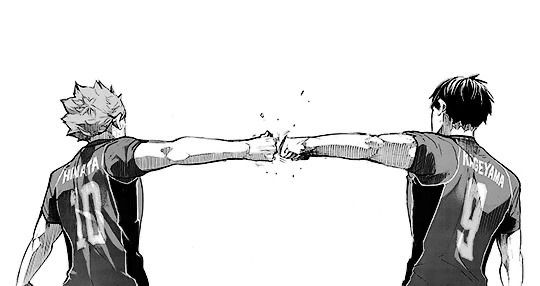
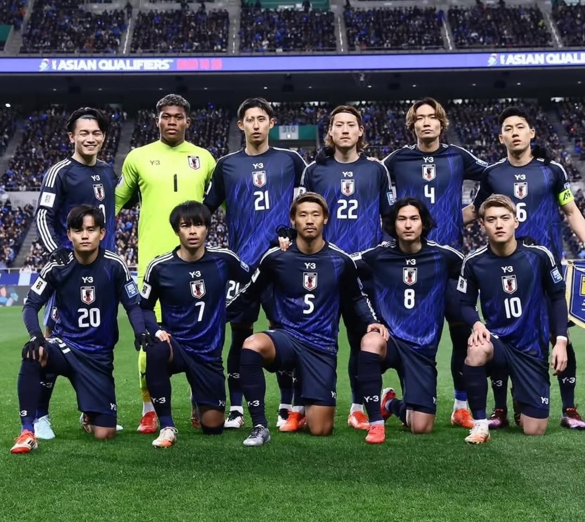
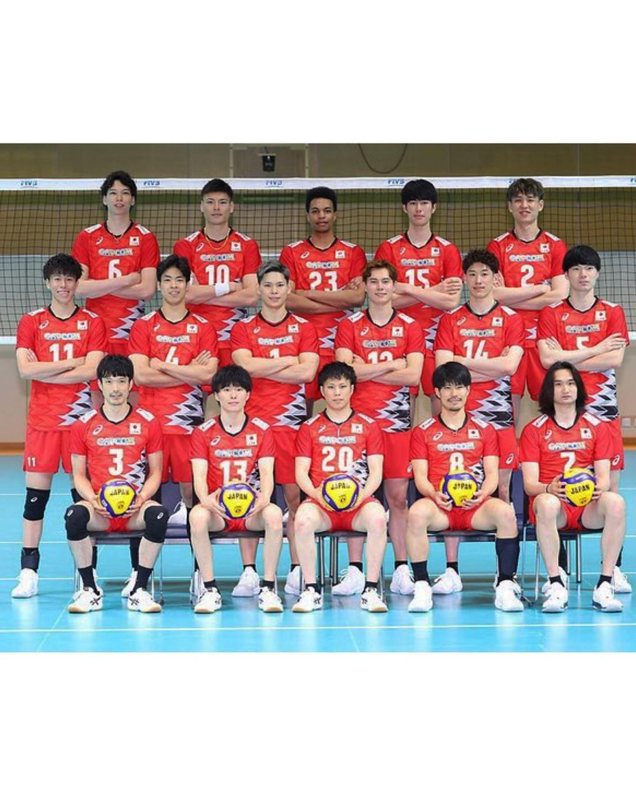
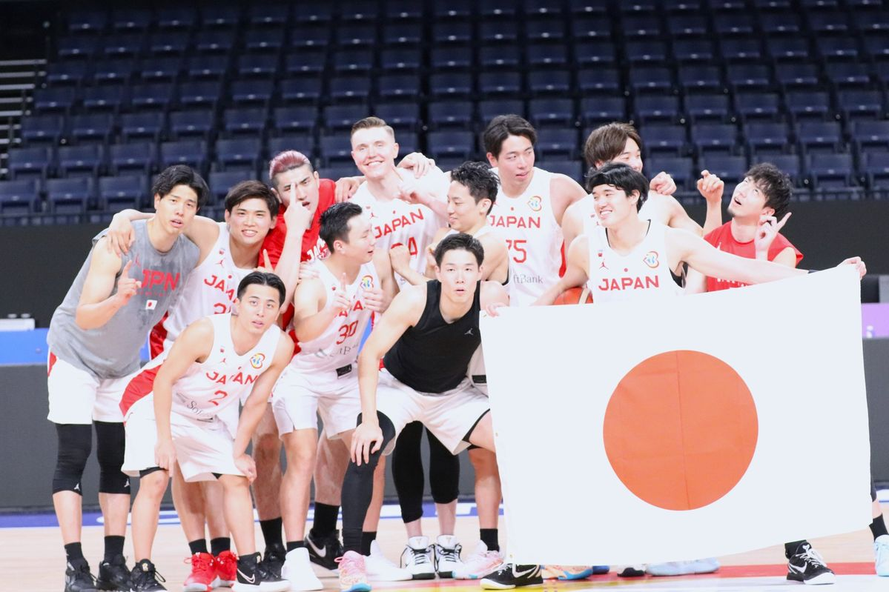

¿Quién es Haruichi Furudate?


Haruichi Furudate es el mangaka y creador de Haikyuu!!. Nació el 7 de marzo de 1983 en la Prefectura de Iwate, Japón. Furudate es una persona muy reservada que utiliza un pseudónimo y rara vez muestra su rostro en público, pero a través de su obra ha demostrado una pasión absoluta por el deporte. El manga comenzó a publicarse en la revista Weekly Shōnen Jump en 2012 y terminó en 2020, convirtiéndose en uno de los mangas deportivos más vendidos de todos los tiempos.
En qué se basó para crear la historia
Su propia experiencia en la preparatoria: Furudate jugó como bloqueador central en el club de voleibol de su escuela secundaria. El autor ha confesado que creó Haikyuu!! para quitarse una espina clavada: sentía que durante sus años de jugador no había logrado dar su 100% ni exprimir todo su potencial debido a la falta de entrenamiento adecuado.
El deseo de popularizar el voleibol:
En Japón, el fútbol y el béisbol se llevan toda la atención escolar. Furudate quería demostrarle a los jóvenes lo emocionante, rápido y estratégico que es el voleibol, logrando que miles de estudiantes en la vida real se inscribieran a clubes de voleibol tras leer el manga.



El escenario real:
La mayoría de los paisajes, gimnasios y calles que aparecen en el anime están basados fielmente en lugares reales de la Prefectura de Iwate y la ciudad de Sendai, lo que hace que la atmósfera se sienta muy auténtica.